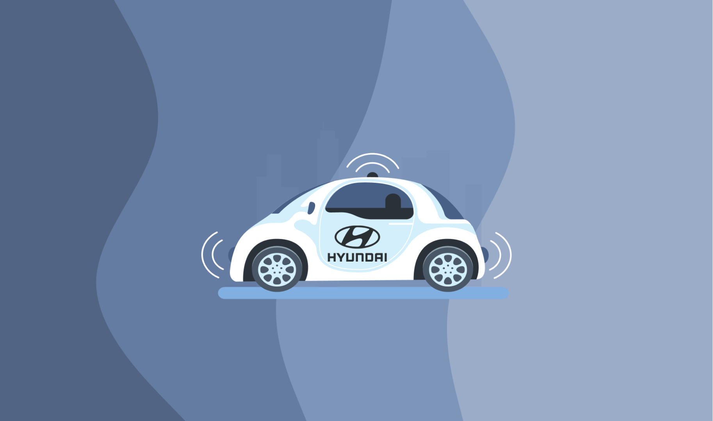

Hyundai
Role
UX Research AssistantProject Leads
Don Norman, Colleen EmmeneggerTimeline
October 2018 — March 2019Overview
UX Research Assistant working with Hyundai and UCSD Design Lab faculty to research and prototype projects in micro-mobility space & autonomous robotaxi.
*This project is under NDA. Sensitive details and assets have been omitted or modified. Contact me for questions regarding my experience.
My Role
Contributions
- Participated in an ethnographic study to research commuter behaviors
- Involved in interviews and focus group discussions with commuters, ride-share passengers, etc.
- Coded data from sessions for further analysis
- Presented opportunities in micro-mobility space for Hyundai to explore
- Observed and noted how commuters at different locations/times interacted with mobility modalities such as ride shares and public transit
- Delved deeper to investigate how commuters interacted with vehicle interiors and other commuters in the same space
- Utilized different methods of transportation to observe passenger behaviors during first/last mile interactions
- Conducted additional interviews to investigate areas of opportunity in improving passenger first/last mile experiences
- Identified a need for micro-mobility development in specific space that Hyundai could capitalize on
- Analyzed multiple current forms of mobility & their use cases
- Created research artifacts for presentation to Hyundai stakeholders
- The team's research and findings helped inform the development of a Robotaxi prototype

- Assisted the Robotaxi team in simulating an autonomous taxi experience for testing passenger interactions within and with the vehicle
- Observed and coded notes on how participants interacted within this environment & the vehicle interfaces
- Presented key insights, data, and design handoffs to Hyundai stakeholders
Conclusion
Throughout this experience, I gained valuable experience with conducting research methods, in the field, and utilizing findings to develop handoffs that will guide future product development.
This opportunity allowed me to build upon my research skills and learn from an amazing team of mentors. I am grateful to have worked and grown with everyone involved in this project!
Per my NDA, sensitive details have been omitted. Please contact me for more questions regarding my experience!
Check out more projects here!
Home